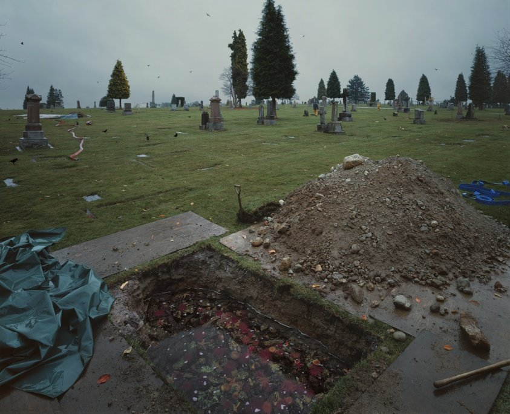

The Flooded Grave
Jeff Wall · 1998–2000 · Transparency in light box · 228.6 × 282 cm · Art Institute of Chicago
In copyright. Look and learn: shown for study, not for download.
Jeff Wall worked on this picture for two years. He photographed in two Vancouver cemeteries over several months, then built a tank in his studio from a plaster cast of a real grave and, with marine-life specialists, grew in it a living system like one found off the coast of Vancouver. The cemetery and the tank were joined by computer from many separate photographs. The finished transparency is shown in a light box 2.3 metres high and 2.8 metres wide.